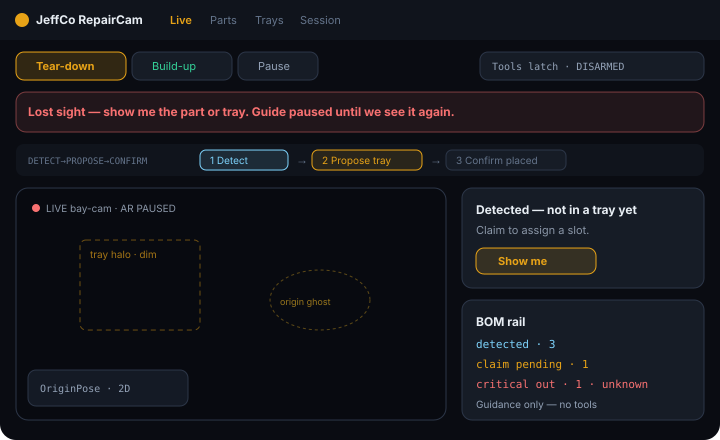
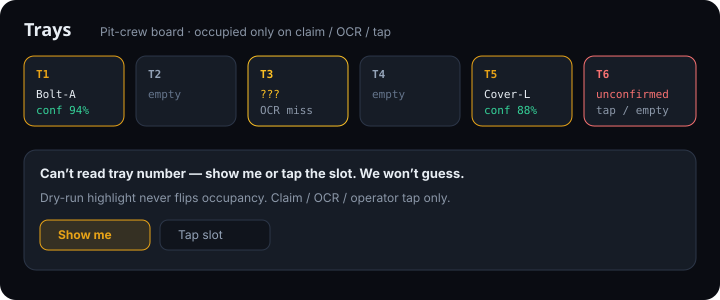
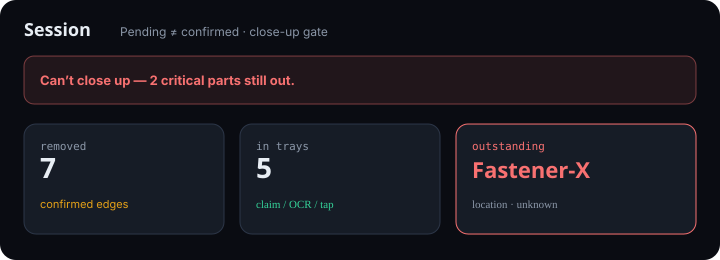

RepairCam
Guided tear-down & reassembly console with tray memory and AR put-back — claim honesty, not sticky notes.
For techs who need part↔tray↔origin spatial memory and a firm close-up gate when criticals are still out.

What it does
RepairCam is a pit-crew console: detect parts, claim them into numbered trays, remember origins, then AR-highlight tray and put-back on build-up.
Modes are first-class — Tear-down · Build-up · Pause. Live shows the next action strip; Trays is a confidence-aware board; Session holds the step rail and graph.
Detection alone never marks “in tray.” Claims need confidence or an operator tap. OCR misses ask show-me / tap slot — never nearest-tray invention.
Guidance only: highlights and confirms. No torque, tighten, or tool actuation fantasy.
Capabilities
Day-one surface
Live + AR guide
Day oneTray halo, origin ghost, mode switch, next-action strip.
Parts CRM
Day oneDetected · claim pending · in tray (confirmed) · returned · missing · unknown.
Tray board
Day oneNumbered slots with confidence / OCR-miss / empty states.
Session rail
Day oneTear-down / build-up graph; pending vs confirmed edges.
Wizard
Day oneFeed → map trays → first claim gate → optional origin → AR dry-run.
Advanced / gated
Track / mesh debug
AdvancedRaw track merge/split, 3D mesh debug, dense multi-product pack editors.
Admin close-up override
AuditedWhen criticals outstanding — audited only.
How to use it
First-run (wizard)
Add a feed
Bench camera or practice media.
Map trays
Numbered pit-crew layout.
First part→tray claim
Continue locked until a real claim (confidence chip on success).
Optional origin remember
Where it came from on the product.
AR highlight dry-run
Light only; occupancy does not flip. Or Skip.
Daily loop
Pick mode
Tear-down, Build-up, or Pause/lookup.
On Live
Detect → Propose tray → Confirm placed (tear-down) or Pick tray → Origin lit → Confirm returned (build-up).
Fix OCR / occlusion
Show me or Tap slot — don’t guess.
Check Trays board
Badges; clear unknowns before close-up.
Close session
Only when criticals are returned or explicitly overridden (audited).
Honesty / trust
Clarity GH Pages honesty — never invent placement.
- No invented placement. Detect ≠ claim. Sub-threshold → Unconfirmed / Needs show-me, not occupied.
- OCR miss ≠ guessed slot. Show me or tap — we won’t auto-assign nearest tray.
- Occlusion honesty. Lost sight clears confident AR; guide pauses until sight returns.
- AR highlight ≠ placed/returned. Dry-run and guides are light only; confirm is separate.
- Unknown stays unknown. Missing critical with unknown location never invents a last tray.
- Guidance only — RepairCam doesn’t run tools.
- Close-up blocked while criticals outstanding.
Screenshots
Brochure frames from crown mocks — Live occlusion, tray board, session gate.


OCR miss · Returned (confirmed)
Get started
Wire module path / docs when Builder queues the Pages deploy.